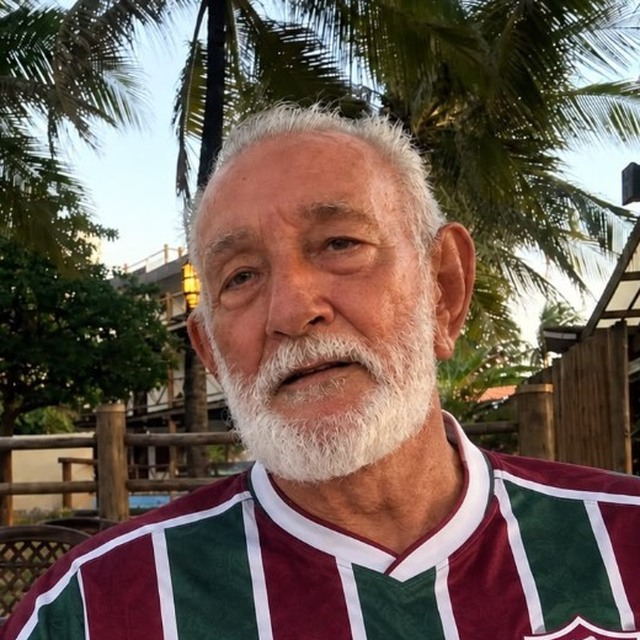

Homenagem
Antônio Marinho
80 anos

“Nosso pai, nosso chão”: uma canção da família para celebrar a sua vida.
Carregando a canção…
0:00
0:00
A letra
Acompanhe linha a linha. Toque em qualquer verso para ir até ele.